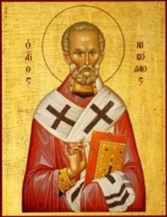

Nicholas is Chosen Bishop
Part 1
The pilgrimage, the miraculous events on the two sea
journeys, and the welcome Nicholas received upon returning home, marked the end
of his young manhood. Yearning for a life of quietude, Nicholas returned to the
brotherhood of his uncle’s monastery. God, however, had other plans in mind.
To make sure that Nicholas got the point, the Lord
spoke to him in a vision. In the vision, Nicholas saw Jesus Christ standing
before him in all His glory and giving him a Gospel ornamented with gold and
pearls. On the other side of himself Nicholas saw the Virgin Mary who placed on
his shoulders the omophorion. The
Lord told Nicholas that not the monastery but another pathway was awaiting him:
“Nicholas, this is not the field on which you ought to await My harvest, but rather turn round and go into the world, and there My Name shall be glorified in you.”
After this vision a few days passed and Archbishop
John of Myra died. All the bishops in the region gathered in Myra in order to
choose a worthy one to succeed him. Many respected and prudent men were
nominated as successors to John. But consensus couldn’t be reached, no matter
who was suggested.
Finally, a certain bishop among them, led by Divine
zeal, declared:
“The election of a bishop to this throne is not up to the decision of people, but is a matter of God’s direction. It is proper for us to say prayers so that the Lord Himself will disclose who is worthy to receive such rank and be the shepherd of the whole land of Lycia.”
The bishops devoted themselves to fervent prayer and
fasting. The Lord revealed to the oldest of them His good will. When this
bishop stood at prayer, a man in an image of light appeared before him and commanded
him to go to the doors of the church during the night and observe who entered
before everyone else. “This,” said the Lord, “is My choice; receive him with
honor and install him as archbishop; the name of this man is Nicholas.”
The bishop informed the rest of the bishops about the divine vision, and these – hearing this – increased their prayers. The bishop who had received the revelation stood in the appointed place and awaited the coming of the chosen man.
When the time came for the morning service, Nicholas
– urged by the Holy Spirit – came to the church before anyone else for the
morning service. As soon as he entered the narthex, the bishop who had been
shown the revelation stopped him and asked him to tell his name. Nicholas
remained silent. The bishop again asked him about his name. Nicholas meekly and
softly answered him: “My name is Nicholas, I am the servant of thy holiness,
Master.”
The pious bishop, hearing such a brief and humble
speech, understood by the very name – Nicholas
– which had been foretold him in the vision, as well as by the humble and meek
answer, that before him was the very man whom God was pleased to have as
foremost bishop of the church of Myra. Joyfully taking Nicholas by the hand, he
told him: “Follow me, child.”
When he led Nicholas to the bishops, they were
filled with delight and were relieved in spirit that they’d found the man
indicated by God Himself. They escorted Nicholas to the church for the
ordination.
Rumor about the decision spread everywhere and
multitudes of people flocked to the church. The bishop who had been deemed
worthy of the vision addressed the people and exclaimed:
“Brethren, receive your shepherd whom the Holy
Spirit Himself anointed and to whom He entrusted the care of your souls. He
wasn’t appointed by an assembly of men, but by God Himself. Now we have the one
that we desired, and have found and accepted the one we sought. Under his rule
and instruction we will not lack the hope that we will stand before God in the
day of His appearing and revelation.”
All the people gave thanks to God and rejoiced with
indescribable joy. The council of bishops with all the church clergy performed
over him the ordination and joyously celebrated the occasion.
By this means the Church received a bright lamp
which did not remain under a bushel, but was set in the pastoral place proper
to him.
Bishop Nicholas remained a great ascetic, appearing
to his flock as an image of gentleness, kindness and love towards people. This
was particularly precious for the Lycian Church during the time of persecution
of Christians under the emperor Diocletian (284-305).
Despite his great gentleness of spirit, Bishop
Nicholas was a zealous and ardent warrior of the Church of Christ. At that time
there remained still many pagan temples in the area. Nicholas, animated by the
zeal of God, visited all these places, destroying and turning into dust the
temples of the idols and purifying his flock from diabolical defilement.
The Saint brought his church peace and blessings,
sowing the word of Truth, nipping in the bud defective and spurious claims of
wisdom, uprooting heresy and healing the fallen and those led astray through
ignorance. He was indeed a light in the world and the salt of the earth,
wherein his life did shine and his word was mixed with the salt of wisdom.
Thought to Ponder: St. Nicholas is referred to
as a bright lamp that doesn’t remain under a bushel. Let’s pause for a moment
and consider the light of his life, and the Light of the World – Jesus Christ.
Ephrem the Syrian wrote about Him, “The star of light that shone forth suddenly
beyond its nature is smaller than the sun yet greater than the sun; it was
smaller in visible light; it was greater in hidden power because of its symbol.
The morning star shed its rays among the dark ones and led them like blind men.
They came and received a great light. They gave offerings and received life and
worshipped and returned.” (Ephrem the
Syrian, Hymns, Hymn 6:7-8)
Thought to Discuss around the Dinner Table: What does God want us to do
with our lives? Have we ever asked Him?
When people look at us, what image (icon) do they
see in our lives? Is it the image of Christ or of some worldly hero?
Jesus said Himself, “’You are the light of the
world. A city that is set on a hill cannot be hidden. Nor do they light a lamp
and put it under a basket, but on a lampstand, and it gives light to all who
are in the house. Let your light so shine before men, that they may see your
good works and glorify your Father in heaven.’” (Matthew 5:14-16 NKJV)
Day by day, how can we let His light shine before
our friends, neighbors and co-workers so that they’ll glorify our Father in
Heaven?
Nicholas is Chosen Bishop
Part 1
